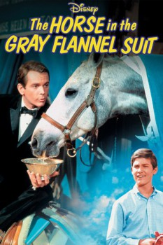

Country:United States, 113 minutes
Spoken languages:English
Genres:Drama, Family, Comedy
Director(s):Norman Tokar
Writer(s):Louis Pelletier, Eric S. Hatch
Video Codec:Unknown
Number: 1598

Certification:G
Storyline:
Frederick Bolton has to solve two problems. First, his boss has instructed him to come up with a reasonable campaign to promote a new product, a stomach pill named "Aspercel" - by tomorrow. The second problem is Fred's daugther, Helen. She is absolutely fond of horses, takes riding classes and has already had decent success in some competitions. Her biggest wish is to own a horse herself, a dream her father cannot afford at all. Now Fred tries to solve both problems at once by simply combining them: A horse named "Aspercel", ridden by his daugther should bring the name of the pill into the papers and make Helen happy, too. But there's still one more obstacle: Helen and Aspercel of course have to win a few prices to make this idea work...
Cast:
Lloyd Bochner (as Archer Madison), Ellen Janov (as Helen Bolton), Morey Amsterdam (as Charlie Blake), Kurt Russell (as Ronnie Gardner), Fred Clark (as Tom Dungan)
Medium: Media file,
Location: D:\Disney\THE_HORSE_IN_THE_GRAY_FLANNEL_SUIT.mp4
Loaned: No
Aspect ratio: Unknown